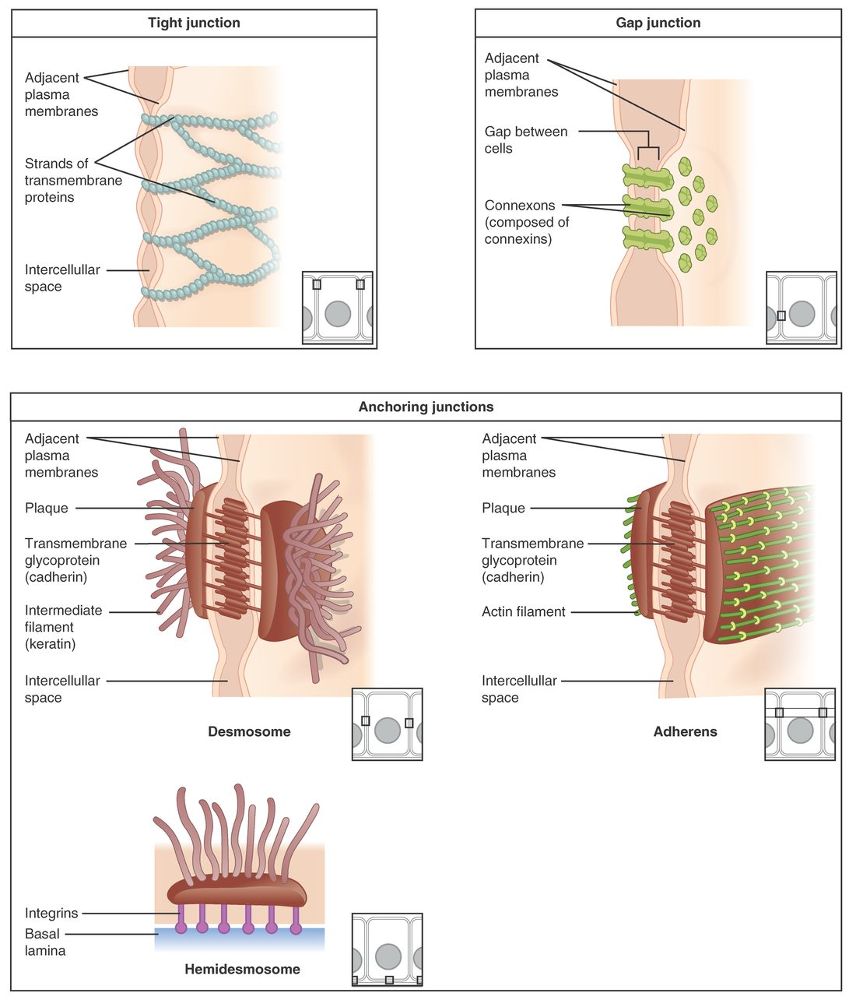

Why cells need to be joined
Rub the back of your hand hard. The skin cells there are pushed and pulled, yet they do not slide apart. Now think of the lining of your urinary bladder. It holds urine for hours, but the urine does not seep between the lining cells into the tissue beneath. And in your heart, millions of cells contract almost together, beat after beat. Three different kinds of connection make these three things possible. This page explains tight junctions, desmosomes and gap junctions: what each is built from and what each does.
What a cell junction is
A cell junction (junction = a joining) is a specialized spot where a cell's plasma membrane connects to a neighboring cell or to the material around it. Every junction is built from membrane proteins. Some of those proteins reach across the narrow space between two cells and grip the matching proteins of the neighbor. Many are also tied, on the inside, to the cytoskeleton.
There are three main types, each with one main job:
- Tight junctions seal the space between cells.
- Desmosomes rivet cells together against pulling forces.
- Gap junctions connect the cytoplasm of neighboring cells so small substances pass between them.
Figure 1 shows each one up close.

Tight junctions: the seal
A tight junction is a continuous seam where the plasma membranes of two neighboring cells are pressed together and stitched shut. Rows of integral proteins in one membrane (claudins and occludin) bind to matching rows in the other membrane, like the interlocking ridges of a zipper-seal bag. The band runs all the way around each cell, near the surface that faces the inside of a tube or a hollow organ.
Because the band is continuous, a sheet of cells joined by tight junctions works as a barrier. A substance crossing the sheet cannot slip through the space between the cells. It has to go through the cells themselves, crossing two plasma membranes. That puts the cells' own membrane proteins in charge of what crosses.
Examples:
- The lining of your urinary bladder keeps urine from leaking back into the tissue beneath it.
- The lining of your stomach keeps stomach acid from seeping between cells into the stomach wall.
- The lining of your intestine forces nutrients to pass through its cells, where membrane proteins select what gets in.
- The capillaries of your brain have unusually tight junctions, so many substances in the blood cannot reach brain tissue.
Tight junctions do a second job too. They act as a fence within the membrane. Membrane proteins on the surface facing the inside of the tube cannot drift past the tight junction to the side surfaces. The cell can keep different proteins on different faces, which lets it take a substance in on one side and release it on the other.
Tightness varies. In some tissues, tight junctions let certain small ions or water slip between cells; in others, such as the bladder, they let almost nothing through. The mix of claudin proteins sets how tight a junction is.
Desmosomes: the rivets
A desmosome (desmos = bond, -some = body) is a small, button-shaped spot that holds two cells firmly together. Each desmosome has three parts:
- a dense plaque of protein on the inner face of each cell's membrane;
- adhesion proteins (a family called cadherins) that stick out of each membrane, cross the narrow gap and grip each other;
- intermediate filaments of the cytoskeleton, which loop into each plaque from inside the cell.
The key is the third part. Recall from the last topic that intermediate filaments are the rope-like fibers that resist pulling. Through its desmosomes, each cell's intermediate filaments are linked to its neighbors' filaments. The whole sheet of cells behaves like one continuous net of rope. A pull on one cell is shared by many.
That is why desmosomes are abundant where tissue is stretched and rubbed: in the skin, and in the heart, whose cells tug on each other with every beat.
A desmosome does not seal anything. Fluid can still pass around it through the gap between the cells. It is a spot weld, not a seam.
Desmosomes are the best-known example of an anchoring junction: any junction that anchors a cell to a neighbor or to the material beneath it, and ties that anchor to the cytoskeleton.
Gap junctions: the tunnels
A gap junction is a cluster of protein tunnels that connect the cytoplasm of one cell directly to the cytoplasm of its neighbor. Its name comes from the narrow gap, about 2 to 3 nanometers, that remains between the two membranes at that spot. The tunnels bridge that gap.
Each tunnel is built in two halves. In each membrane, six proteins called connexins form a ring with a pore in the middle, called a connexon. When the connexons of two neighboring cells line up and dock, they form one continuous tunnel from cell to cell. Hundreds of these tunnels cluster together at one gap junction.
What passes: water, ions, and small molecules such as glucose, amino acids and ATP. Proteins and other large molecules are too big. Because ions carry charge, a flow of ions through gap junctions carries electrical current. A change in charge in one cell spreads directly into the next.
Examples:
- The heart. Gap junctions let an electrical signal spread from each heart cell to its neighbors within a fraction of a millisecond. The heart's cells contract in a coordinated wave instead of one at a time.
- The uterus near the end of pregnancy. The number of gap junctions in the uterine wall rises sharply, which lets its cells contract together during birth.
- The lens of the eye. Its deep cells have no blood supply of their own. They receive nutrients passed cell to cell through gap junctions.
Gap junctions can close. A sharp rise in calcium ions or a fall in pH inside a cell, which happens when a cell is badly damaged, shuts its connexons. That seals the injured cell off from its healthy neighbors.
Where each junction sits
A single cell in a lining often has all three types (Figure 2). Along the side of the cell, from the surface facing the inside of the tube downward, you usually meet the tight junction first, then anchoring junctions, with desmosomes and gap junctions scattered below.
Comparing the three
| Tight junction | Desmosome | Gap junction | |
|---|---|---|---|
| Main job | Seals the space between cells | Holds cells together against pulling | Lets ions and small molecules pass from cell to cell |
| Shape | A continuous band around the cell | A small button-shaped spot | A cluster of tunnels |
| Proteins that span the membranes | Claudins and occludin | Cadherins | Connexins (six per connexon) |
| Tied inside to | Actin microfilaments | Intermediate filaments | Not tied to the cytoskeleton for its job |
| Space between membranes | None: the membranes touch | A narrow gap, bridged by cadherins | About 2 to 3 nm, bridged by the tunnels |
| Can fluid pass between the cells? | No, or very little | Yes, around it | Yes, around it; small solutes also pass through it |
| Abundant in | Linings of the bladder, stomach and intestine; brain capillaries | Skin; heart | Heart; uterus near birth; lens of the eye |
| If it fails | Substances leak between cells | Cells pull apart and blister | Neighboring cells stop acting together |
When junctions fail
Junction proteins can be attacked, and the result depends on which junction is lost.
- Desmosomes: in the disease pemphigus, the immune system makes proteins that attack the cadherins of desmosomes. Skin cells lose their grip on each other, and fragile blisters form in the skin and mouth that tear open with light rubbing.
- Tight junctions: some bacterial toxins loosen tight junctions in the gut lining, so fluid and ions leak between cells.
- Gap junctions: inherited defects in particular connexins cause some forms of deafness and cataracts (a cloudy lens), because cells deep in the ear and in the lens depend on sharing ions and nutrients.
Summary
Cells join through junctions built from membrane proteins. Tight junctions seal, so substances must pass through cells rather than between them. Desmosomes rivet cells together and link their intermediate filaments into one strong net. Gap junctions make tunnels that let ions and small molecules, and so electrical current, pass straight from cell to cell.